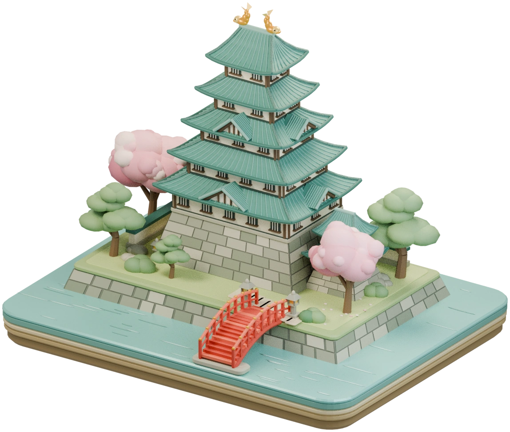

TOKAI PLACE-NAME QUEST
東海三
県
地名よみ旅。
愛知・岐阜・三重の町の名前、いくつ読める？
125市町村と名古屋16区を、読み解く旅へ。

TRAVEL LOG
旅の記録獲得バッジ0/ 141 個
正解した地名0
3県の達成率0%
REGION SELECT
地域を選んで挑戦
名所、自然、ものづくり。街の個性を見つけて、読みの旅へ。
東海版の対象は愛知・岐阜・三重です。出典資料で読みを確認できた町名・丁目・小字を収録。読み未確認の地名は出題対象外です。